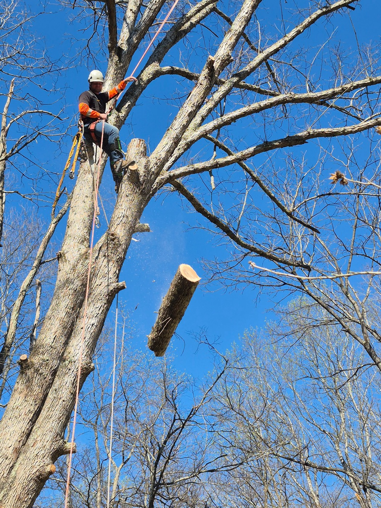
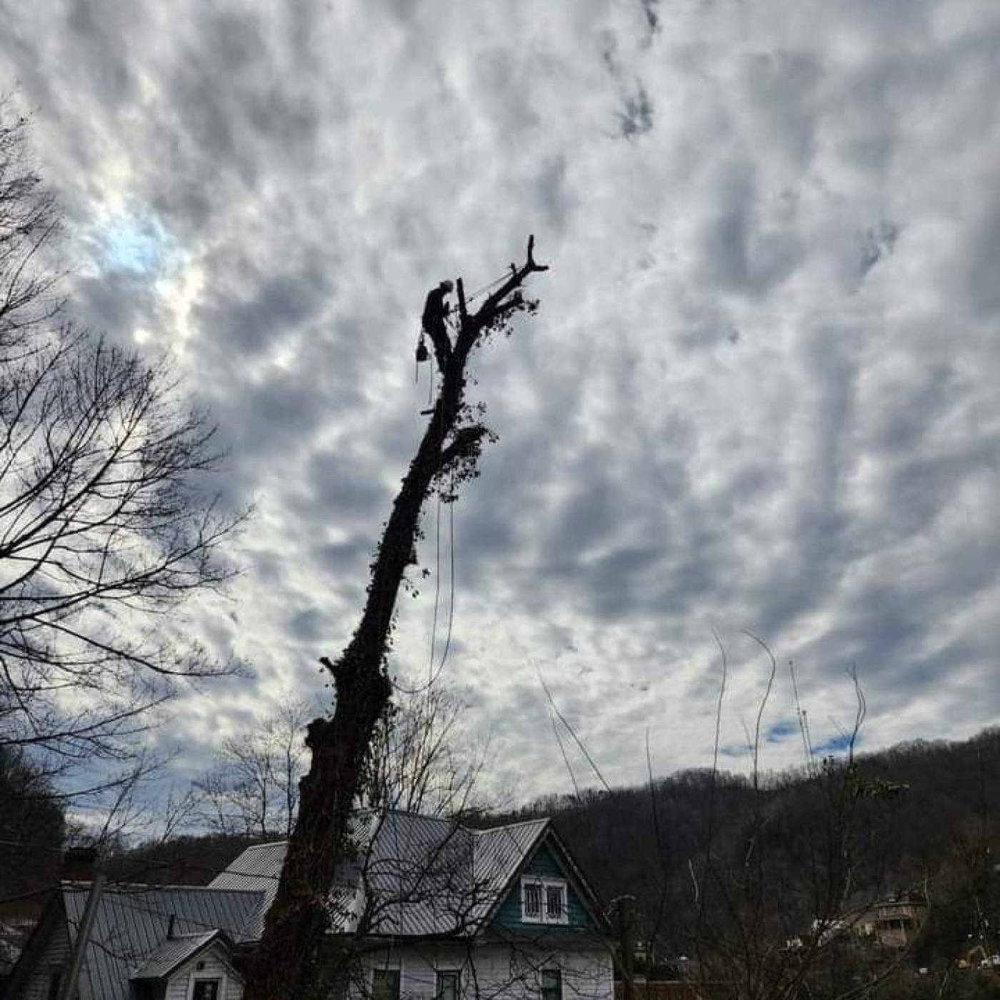
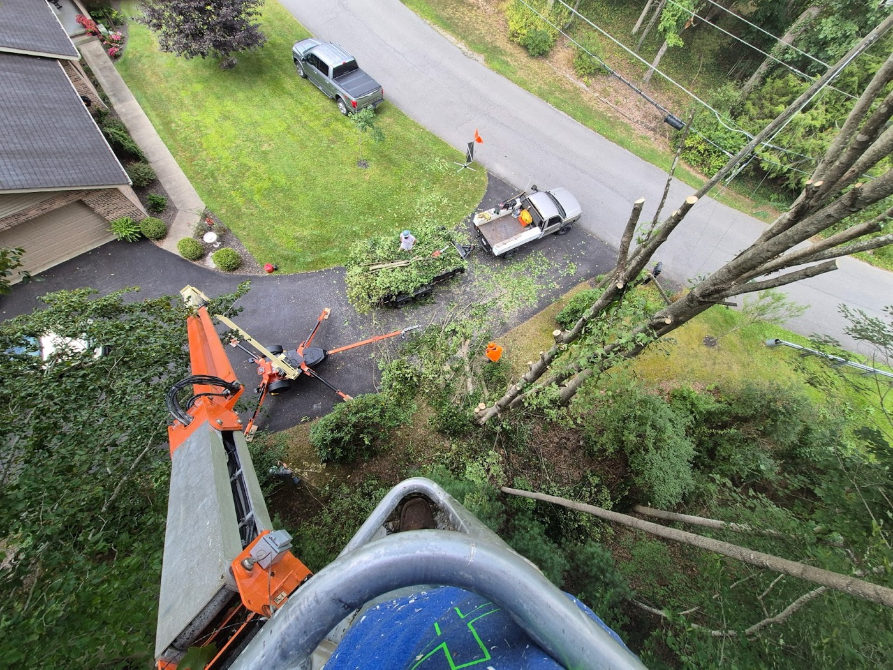
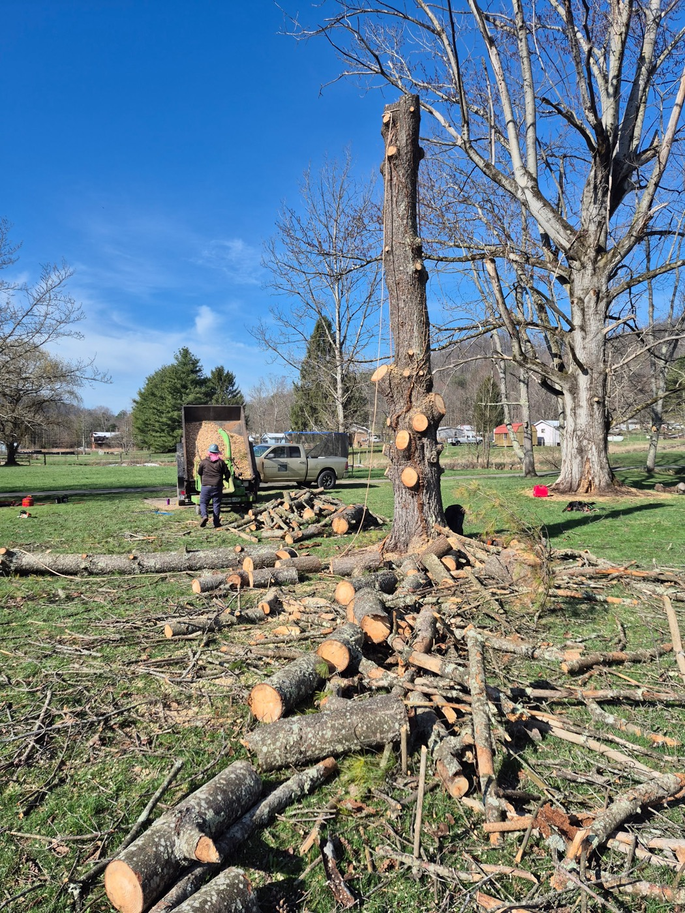
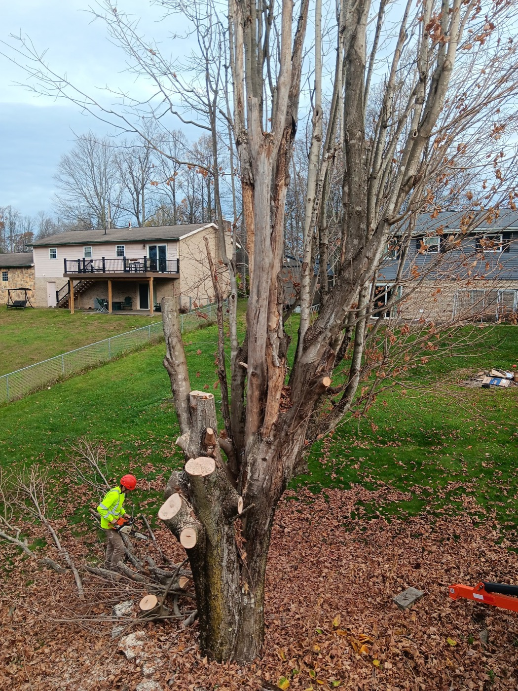
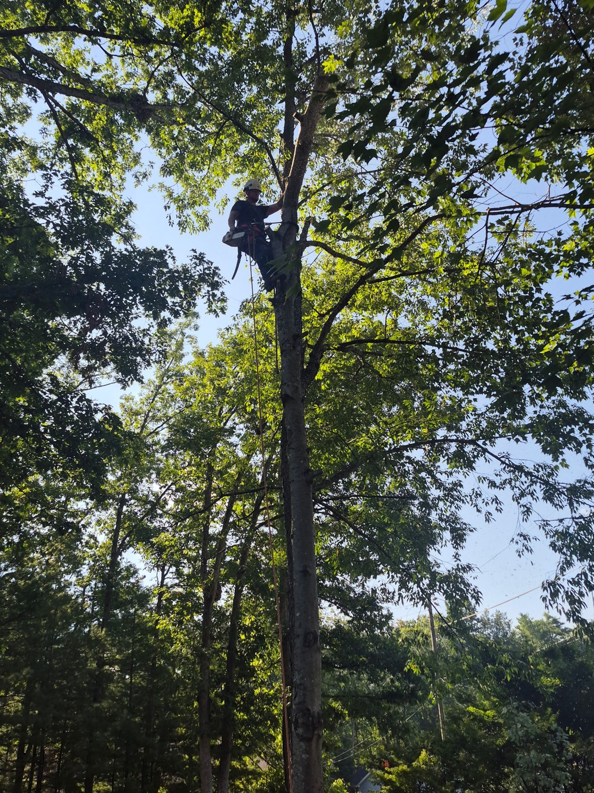
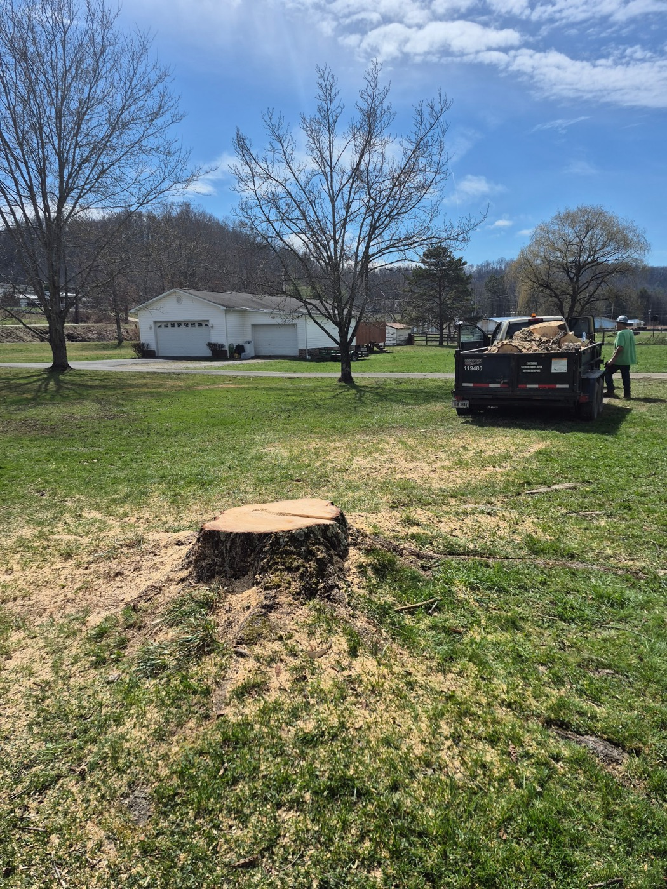
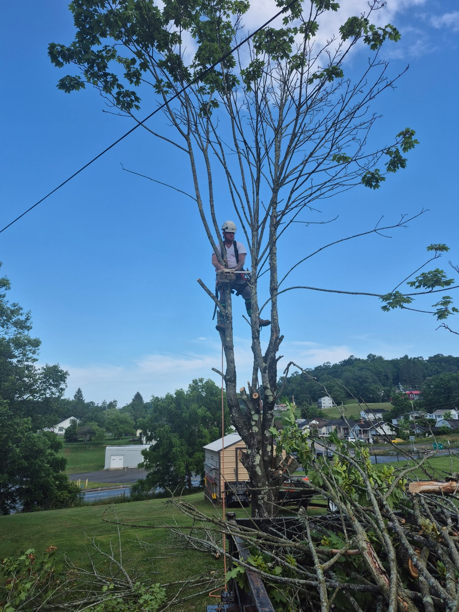

01
TREE REMOVAL
Large and technical takedowns — big pines and hardwoods sectioned, lowered and hauled. The kind of removal that has to come down in pieces, done without tearing up the yard.

Technical removals, climbing and rope-down takedowns, and trimming around Beckley — roped down piece by piece when there's no room for a bucket, and the yard left clean when we're done.
No padded menus — the real jobs we get called for around Beckley, done by hand and left clean.
Large and technical takedowns — big pines and hardwoods sectioned, lowered and hauled. The kind of removal that has to come down in pieces, done without tearing up the yard.
When there's no room for a bucket truck, the tree comes down the hard way — climbed and roped down a piece at a time. Tight backyards, trees between buildings, no shortcuts.
Tall limbs and whole trees leaning over a house taken down without touching the roof. Careful rigging where one wrong cut would do damage — the work people call us back about.
Crown work, shaping and clearing — plus a full debris cleanup after every job. We're not finished until the brush, rounds and sawdust are gone and the yard looks right.
Every photo here is our own crew on a real Beckley-area job — climbing, rigging, sectioning and cleanup.






“We had Top Line Tree Service come in and remove 11 large pine trees. Chris had to climb and rope down a lot of them. Extremely professional, honest, and did an awesome job — clean up was great as well and really made sure we were happy with the job they done. 100% recommend.”
“These men know their jobs, great professionals. We had a very tall tree with good-size limbs over the house's roof. Top Line came in and took the tree down without doing any damage to the house or roof. They did super good on the clean up. We will never use anyone else.”
Based at 212 Azzara Ave in Beckley and working across Raleigh County and the surrounding southern-WV towns. Got a tree that needs to come down — or one leaning the wrong way? Call for a free estimate.

One call to Top Line and we'll come look, give you a straight estimate, and get it down clean.
(681) 222-3940